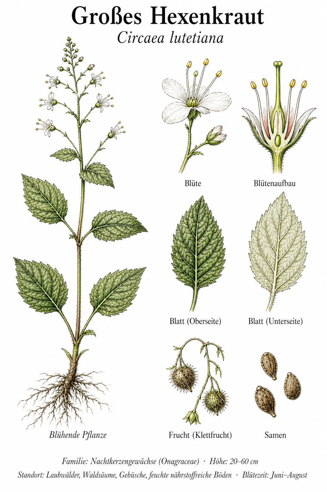
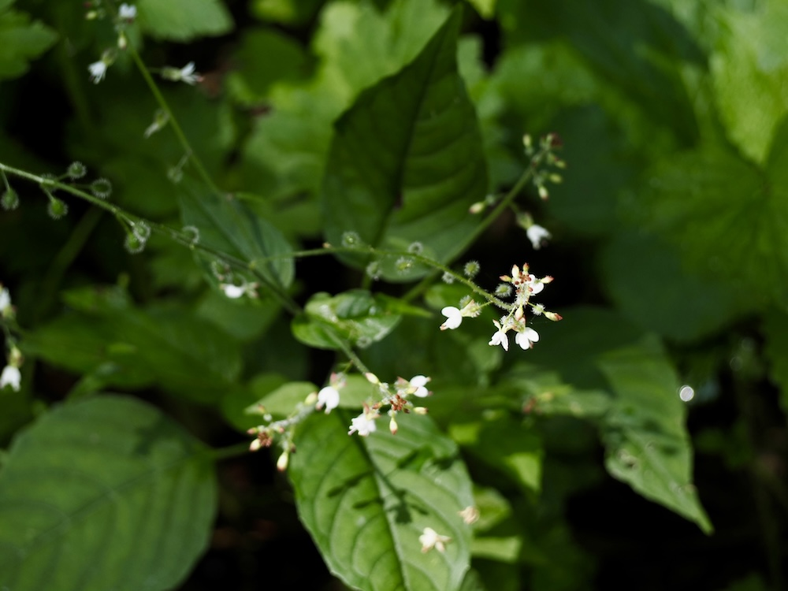

Eine Hexen-Pflanze aus der Antike
Der Gattungsname „Circaea“ kommt von Kirke — der berühmten Zauberin aus Homers Odyssee, die Odysseus’ Männer in Schweine verwandelte. Im Mittelalter glaubte man tatsächlich, diese Pflanze sei Bestandteil ihrer Zaubertränke — daher der deutsche Name „Hexenkraut“. Tatsächlich hat sie keinerlei magische Wirkungen, aber dieser Aberglaube hat den Namen über Jahrhunderte gerettet.
Klett-Samen wie Schiffsanker
Die unscheinbaren, später hängenden Früchte sind dicht mit Widerhakenborsten besetzt — sie heften sich an Tierfell oder an die Hosen von Wanderern und werden so durch den Wald verteilt. Wer im August oder September durch Buchenwälder spaziert und nachher kleine, leicht behaarte Früchte am Stoff entdeckt, hat das Hexenkraut bereits „mitgenommen“, ohne es zu merken.